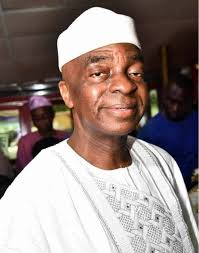

.jpg)

On September 27, 1954, David Olaniyi Oyedepo was born in Osogbo, Nigeria, but is a native of Omu-Aran, Irepodun Local Government Area of Kwara State. He was raised in a mixed religious family. His father, Ibrahim, was a Muslim healer. His mother, Dorcas, was a member of the Holy Order of the Cherubim and Seraphim Movement Church (C&S), a branch of the Aladura movement in Nigeria. He was raised by his grandmother in Osogbo, who introduced him to the virtues of Christian life via early morning prayers which she attended with him. She also taught him the importance of tithing.
Oyedepo studied architecture at the Kwara State Polytechnic Ilorin. He also received a PhD in Human Development from Honolulu University, Hawaii, US.
Oyedepo worked briefly with the Federal Ministry of Housing in Ilorin before resigning to concentrate on missionary work
Oyedepo was "born again" in 1969, through the influence of his teacher, Betty Lasher, who took an interest in him during his high school days.. According to him, he received a mandate from God through an 18-hour vision in May 1981, to liberate the world from all oppression of the devil through the preaching of the word of faith. This is the inaugural vision that led to the founding of the Living Faith Church World Wide (LFCWW), first called Liberation Faith Hour Ministries, in 1981.Two years later, on September 17, 1983, Pastor Enoch Adeboye, General Overseer of the Redeemed Christian Church of God, ordained David and his wife, Florence Abiola Akano (known as Faith Abiola Oyedepo) to become pastors and officially commissioned the new church.
Five years later, Oyedepo was ordained as Bishop. Living Faith Church (AKA Winners Chapel International) started in Kaduna but moved to Lagos, the former capital of Nigeria in July 1989, to start a new branch of the church after Oyedepo claimed to have received instructions from God to reach out to the people of Lagos. Oyedepo is the wealthiest preacher in Nigeria with a net worth of over US$150 million. The church owns four private jets and several buildings, including in London and the US. Oyedepo is an author and publisher who has written over 70 titles apart from periodicals. He is the chairman/publisher of Dominion Publishing House (DPH), a publishing arm of the ministry. DPH has over 4 million prints in circulation to date. Through Oyedepo; Covenant University, Faith Academy and Kingdom Heritage Model Schools have been established to equip the youth for global impact. The construction of a third university named Crown University is already underway, located in Calabar, Cross River, Nigeria.
In 1998, Oyedepo claimed he was instructed by God to build a new base for the Commission to accommodate the increasing number of worshippers. This resulted in Oyedepo's church's acquisition of the initial 530-acre (2.1 km2) facility, known as Canaanland, which serves as the headquarters. It is the home of the 50,000-seat capacity auditorium, the 'Faith Tabernacle'. This was a feat also recorded by the Guinness Book of Records. Faith Tabernacle was reported as the Worlds' Largest Church Auditorium in December 2005 Construction was completed within 12 months. Reports also claimed that this building was built debt free.[7][8] This 50,000-seat edifice was dedicated on September 18, 1999, under the administration of former President Olusegun Obasanjo. [9] Canaanland is in Ota, Ogun state and is the 5,000-acre (20 km2) estate and campus, that houses The 50,000 seat auditorium, the church secretariat, the church's youth chapel, a primary school called Kingdom heritage model school, a full boarding mission secondary school called Faith Academy, with over 1,500 students and the Covenant University facilities -[10] which accommodates over 7,000 students, fully resident in ultra-modern hostel facilities - with fully equipped faculty buildings and numerous staff housing facilities. Canaanland campus also has for-profit establishments operated by the church such as a bakery, a bottled water processing plant, a petrol station, various restaurants and shopping stores, several residential houses that provide for the over 2,000 church employees and guesthouses. Four banks are also present on this Estate, three of which are branches of external commercial banks and one which is a community and micro-finance Bank and operated by the Church.
The whole of Canaanland which includes a proposed 15,000 housing estate known as Canaan City had increased to 17,000 acres as at 2012.[11] The Ministry's biggest annual meeting Shiloh, holds every December in the same Faith Tabernacle and often welcomes thousands of congregants across the world.
Oyedepo's church also operates its own publishing house, called Dominion Publishing House (DPH), commissioned on December 5, 1992, which has published over 70 Christian, inspirational and motivational books, mini books, magazines and other resources.
Some of his authored books include:Life is not a funfair, life is a warfare” ... “We live in a thinker's world, thinkers rule the world; If you are not a thinker, you end up as a slave.” ... “The Church has celebrated the place of the spirit. ... “THERE IS NO MOUNTAIN ANYWHERE, EVRY BODY'S MOUNTAIN IS HIS IGNORANCE.”